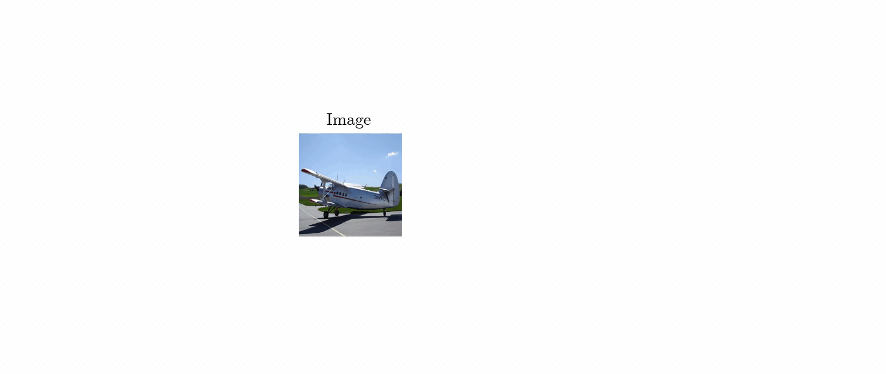
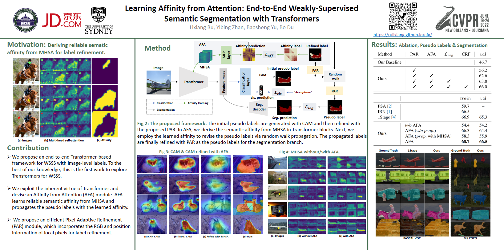
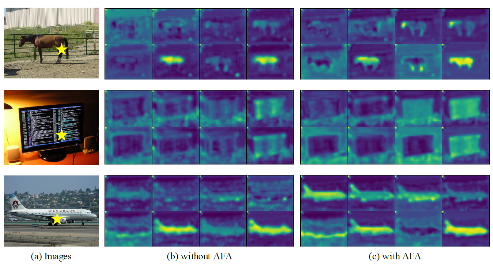
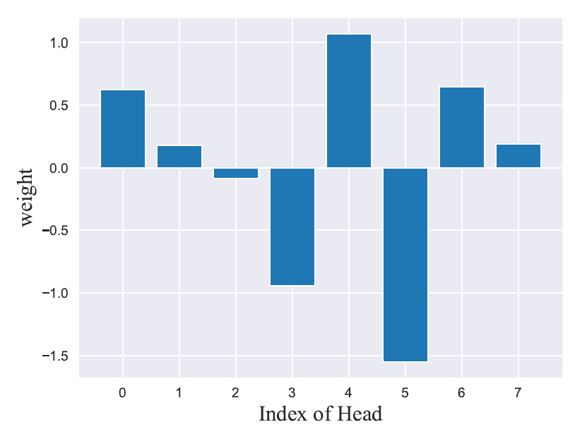
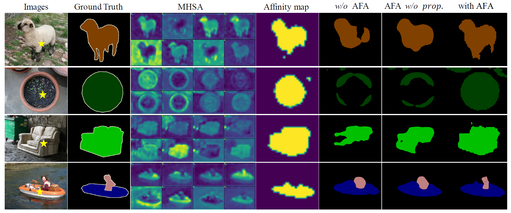
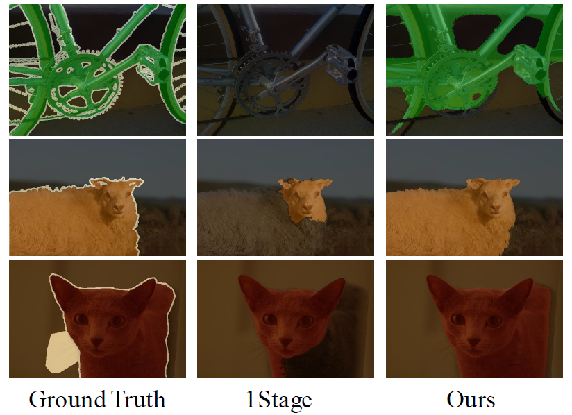
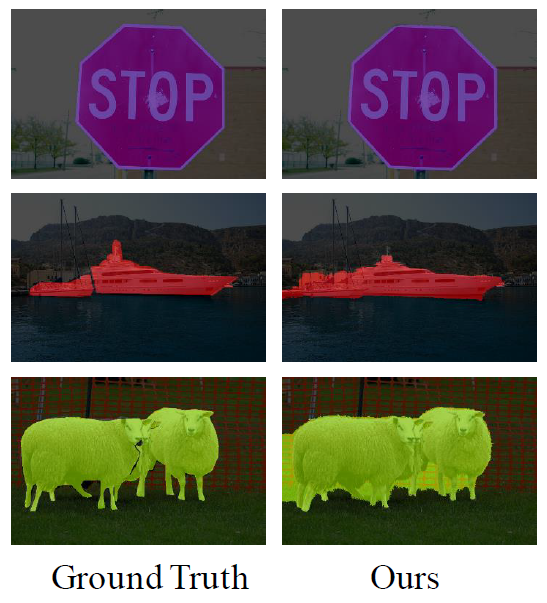

Learning Affinity from Attention: End-to-End Weakly-Supervised Semantic Segmentation with Transformers
| Lixiang Ru† | Yibing Zhan‡ | Baosheng Yu¶ | Bo Du† |
|
†Wuhan University |
†JD Explore Academy |
¶The University of Sydney |
|  |
| Abstract: Weakly-supervised semantic segmentation (WSSS) with image-level labels is an important and challenging task. Due to the high training efficiency, end-to-end solutions for WSSS have received increasing attention from the community. However, current methods are mainly based on convolutional neural networks and fail to explore the global information properly, thus usually resulting in incomplete object regions. In this paper, to address the aforementioned problem, we introduce Transformers, which naturally integrate global information, to generate more integral initial pseudo labels for end-to-end WSSS. Motivated by the inherent consistency between the self-attention in Transformers and the semantic affinity, we propose an Affinity from Attention (AFA) module to learn semantic affinity from the multi-head self-attention (MHSA) in Transformers. The learned affinity is then leveraged to refine the initial pseudo labels for segmentation. In addition, to efficiently derive reliable affinity labels for supervising AFA and ensure the local consistency of pseudo labels, we devise a Pixel-Adaptive Refinement module that incorporates low-level image appearance information to refine the pseudo labels. We perform extensive experiments and our method achieves 66.0% and 38.9% mIoU on the PASCAL VOC 2012 and MS COCO 2014 datasets, respectively, significantly outperforming recent end-to-end methods and several multi-stage competitors. Code will be made publicly available. |

Paper |

Code |

Poster |
Sample Results
| §. Visualization of the MHSA with and without AFA. | §. The learned weights of each head of MHSA in the AFA module. |
|  |  |
|  |
| VOC 2012 | COCO 2014 |
|  |  |
| CAMs from the cls. branch. | Segmentation masks. |

|

|

|

|
Citation
Please kindly cite our paper if you find it's helpful in your work.
@inproceedings{ru2022learning,
title = {Learning Affinity from Attention: End-to-End Weakly-Supervised Semantic Segmentation with Transformers},
author = {Lixiang Ru and Yibing Zhan and Baosheng Yu and Bo Du}
booktitle = {CVPR},
year = {2022},
}
Acknowledgements
We heavily borrowed 1-stage-wseg to construct our PAR. Also, we use the Regularized Loss and the random walk propagation in PSA. Many thanks to their brilliant works!